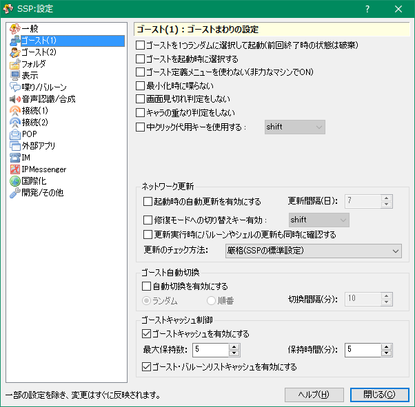

設定：ゴースト(1)
画像左側のリストをクリックすると、それぞれの解説ページへ移動します。

このページでは右クリックメニューの「設定」サブメニューにある項目「本体設定」で開くダイアログの、「ゴースト(1)」ページについて解説しています。
ゴースト全体に共通する設定です。
各項目の解説
- ゴーストを1つランダムに選択して起動
-
起動時にゴーストを1つランダムに起動します。
ゴースト自動切換えとあわせて使用すると、常時ランダムにゴーストを起動しておくことができます。 - ゴーストを起動時に選択する
- 起動時にゴースト選択ダイアログを表示します。
- ゴースト定義メニューを使わない
-
チェックすると、右クリックメニューの項目名・項目の表示の有無について、ゴースト側の指定を無視して標準の状態で表示します。
通常右クリックメニューには、ゴースト側で指定した文字列が表示されていますが、この取得には結構時間がかかるため、メニューの表示が遅くなる場合があります。
このような場合にこの設定をONにしておくと、素早くメニューが出るようになります。
また単にメニューが見難いと感じた場合にもチェックするとよいでしょう。 - 最小化時に喋らない
-
ゴーストをアイコン化するときに一切喋りません。
ゴーストによっては最小化される直前に喋る場合がありますが、それを無効化します。 - 画面見切れ判定をしない
-
画面からはみ出しているかどうかの検出をしません。
ゴーストによっては独自に検出している場合があり、その場合この設定は無視されます。
そのような場合は各ゴーストの設定も確認してみてください。 - キャラの重なり判定をしない
-
キャラクターが互いに重なって配置されているかどうかの検出をしません。
この設定も、ゴーストによっては独自に検出している場合がありますので、ゴーストの設定も確認してみてください。
ネットワーク更新
ゴーストのネットワーク更新に関する設定です。通常は設定する必要はありません。
- 起動時の自動更新を有効にする
-
設定された日数ごとに、ゴースト起動から少し経った時点で、自動的に更新の有無をチェックします。
更新が存在した場合のみ、メニューから更新を実行した場合と同じ動作をします。 - 修復モードへの切り替えキー有効
-
ここで設定したキーを押しながらネットワーク更新すると、ゴーストの全ファイルをチェックして、破損または何らかの原因で最新版ではないファイルを更新してゴーストを修復します。
後述の「更新のチェック方法」で、常にこの修復モードにすることもできます。 - 更新実行時にバルーンやシェルの更新も同時に確認する
-
ゴーストの更新時に、現在ゴーストで使用中のバルーンやシェルがネットワーク更新に対応している場合のみ、あわせて更新を実行します。
更新が2回以上行われるように見えますが、正常動作です。 - 更新のチェック方法
-
更新されたファイルのチェック方法を指定します。
通常は「厳格」のままでほとんど問題がないかと思いますが、もし「常に更新がある状態になる」「セーブファイルが上書きされる」等の症状が出た場合は、「標準」に変えてみてください。
ゴースト自動切換
- 自動切換を有効にする
-
設定した一定時間ごとにゴーストを自動で切り替えることができます。
「ランダム」の場合は一定時間ごとにランダムに切換え先ゴーストを探索し、「順番」の場合はメニューに表示されている順番にゴーストを切り替えます。複数起動状態では、一定時間ごとに、現在起動中の切替可能な（最小化など動作不能状態でなく、フォルダ設定で自動切り替え無効にされていない）ゴーストのうちからランダムで一つが切り替わります。
ゴーストキャッシュ制御
- ゴーストキャッシュを有効にする
-
有効にしておくと、ゴーストキャッシュ機能が有効になります。
ゴーストキャッシュ機能は、多数起動中に一部のゴーストを閉じても、情報をメモリ上に保持しておくことで、再度起動する場合に高速に起動することができるしくみです。
ここではそのキャッシュを何体分・どれぐらいの時間保持するかを設定します。
本体設定の接続(2)->SSTPで一時ゴースト起動設定を行っている場合は多めに設定しておくとよいでしょう。
「最大数」でキャッシュに保持するゴーストの最大数、「保持時間」でキャッシュから開放されるまでの時間を設定します。 - ゴースト・バルーンリストキャッシュを有効にする
-
有効にすると、起動時の現在インストールされているゴーストやバルーンの情報をメモリ上に保持し、列挙にかかる時間を短縮できます。
大量にインストールしている場合に有効です。
下部のボタン
- ヘルプ
-
本体設定ダイアログの、設定中のページのヘルプ（つまりこのページ）を開きます。
ダイアログ右上の「？」マークも同様です。 - 閉じる
-
本体設定ダイアログを閉じます。
ダイアログ右上の「×」マークも同様です。